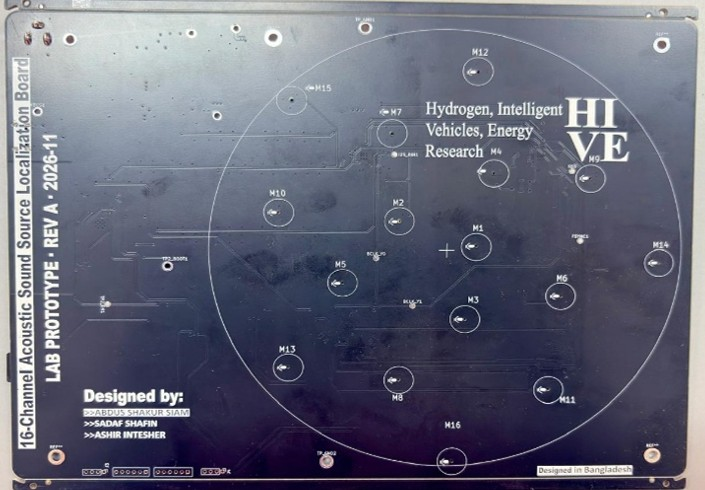
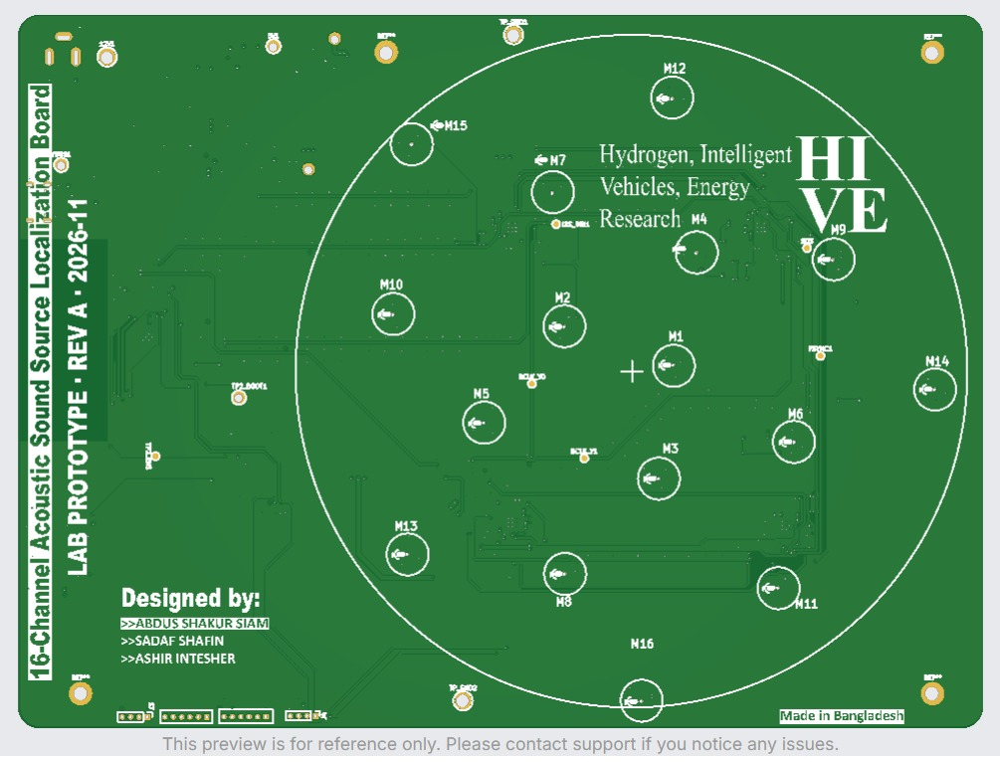
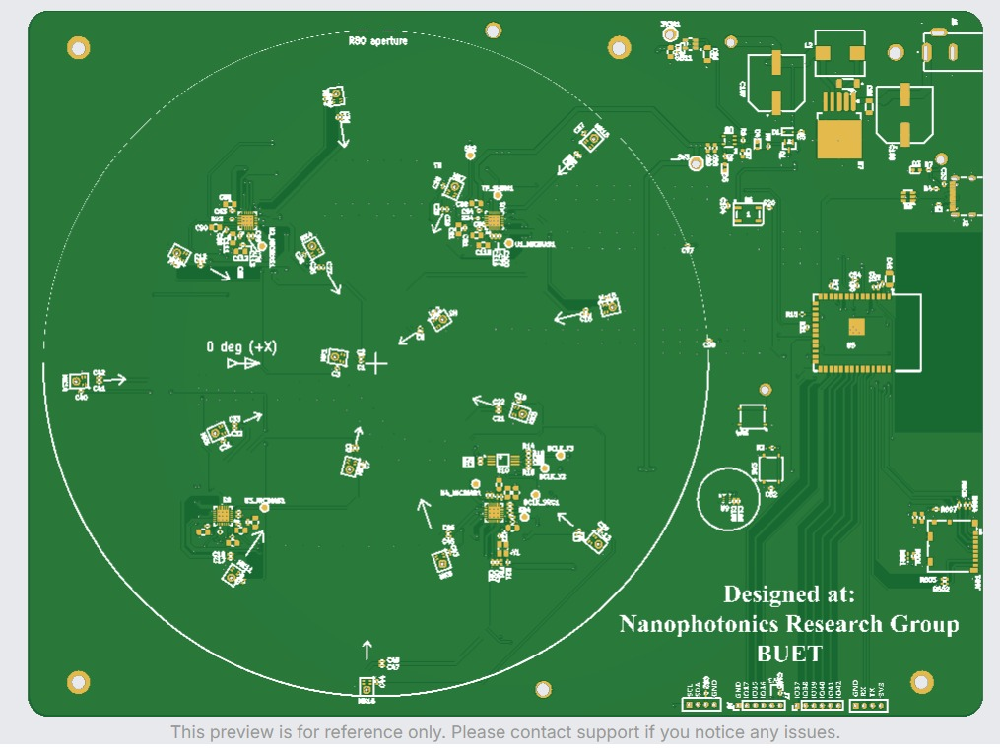
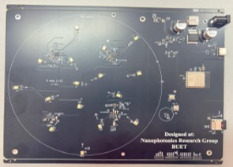

SSL-16: 16-Channel MEMS Acoustic Camera
Integrated 16-Channel Acoustic Camera & Sound Source Localization Platform Engineered with 4× TLV320ADC5140 TDM Daisy-Chain, Vogel Sunflower Array, and ESP32-S3 Compute Engine.
System Architecture & Hardware Specifications
The SSL-16 is an integrated 16-channel acoustic camera system engineered for real-time sound source localization (SSL) and acoustic beamforming, designed for downward-looking deployment over traffic intersections to localize illegal vehicle honking and characterize acoustic pollution in dense urban environments (such as Dhaka, Bangladesh).
The hardware integrates 16 Infineon IM73A135 differential analog MEMS microphones arranged in a non-uniform Vogel (sunflower) spiral layout across an 80 mm radius aperture ($D = 160\,\text{mm}$), eliminating spatial aliasing up to 6.0 kHz. The analog signals are digitized synchronously by four Texas Instruments TLV320ADC5140 4-channel ADCs over a shared 16-channel TDM daisy-chain bus into an Espressif ESP32-S3-WROOM-1-N8R8 microcontroller.
| Subsystem | Engineering Specification |
|---|---|
| Microphone Array & Geometry | 16× Infineon IM73A135V01XTSA1 differential analog, bottom-port MEMS microphones with 73 dB(A) SNR and 135 dB SPL acoustic overload point (AOP). Array follows a Vogel (sunflower) spiral ($R = 80\,\text{mm}$ aperture) with acoustic sound entry via 0.8 mm non-plated through-holes (NPTH), eliminating spatial aliasing and grating lobes from 1.5 kHz to 6.0 kHz. |
| Digitization Front-End | 4× Texas Instruments TLV320ADC5140 quad-channel audio ADCs with differential analog inputs and programmable channel gain, packaged in QFN-24 with 9 thermal vias per exposed pad. |
| TDM Audio Bus & Daisy-Chain | 16-channel Time Division Multiplexed (TDM) audio frame: 16 slots × 16 bits per sample @ $f_s = 48\,\text{kHz}$, yielding $\text{BCLK} = 12.288\,\text{MHz}$ (256 BCLK cycles per frame). ADC-4 acts as the sole TDM Controller, cascading serialized data through ADC-3, ADC-2, ADC-1 into the ESP32-S3 I2S/TDM peripheral. |
| Master Clock & Low-Skew Fan-Out Tree | Abracon ASE-24.576MHZ-LC-T 24.576 MHz 3.3V CMOS crystal oscillator directly driving ADC-4 ($MCLK$). The generated 12.288 MHz bit-clock ($BCLK$) is buffered through a Texas Instruments LMK1C1104 1:4 LVCMOS clock buffer (< 30 ps output skew) with 33 Ω series damping resistors to synchronously drive ADC-1..3 and the ESP32-S3 without clock degradation or phase jitter. |
| Compute Platform | Espressif ESP32-S3-WROOM-1-N8R8 dual-core Xtensa LX7 @ 240 MHz, with 8 MB embedded Flash, 8 MB Octal PSRAM for circular audio frame buffering, native USB-Serial/JTAG CDC, and 2.4 GHz Wi-Fi / BLE 5.0 telemetry. |
| Onboard Mass Storage | Molex 104031-0811 microSD push-push socket routed over a dedicated native 4-bit SDMMC bus (IO4, IO5, IO15, IO16, IO18, IO21) for continuous raw multi-channel audio acquisition and beamforming event logging. |
| Power Architecture | Dual-input power supply: 12V DC barrel jack or 5V USB-C with automatic ideal-diode OR-ing (P-MOSFET $Q_1$ + Schottky $D_1$) into VSYS. Stepped down via XL2596S-5.0 (5V buck), AP2112K-3.3 (3.3V digital), and a Texas Instruments TPS7A2033 ultra-low-noise LDO (3.3V analog) over a unified continuous ground plane. |
| PCB Physical Stack-up | 230 mm × 170 mm, 4 layers, 1.6 mm nominal thickness (JLCPCB JLC04161H-7628 stack-up). All 193 SMD components, differential signal traces, and regulators reside on the bottom layer with a solid ground shield flood, leaving the top layer as a smooth, acoustic faceplate with 16 acoustic entry ports. |
Engineering Case Study & Design Evolution
Localizing vehicle honking in dense metropolitan traffic requires high angular precision and reliable time-difference-of-arrival (TDOA) / steerable beamforming algorithms. Building this custom multi-microphone platform required solving several critical signal integrity and spatial geometry challenges across three iterative design phases:
| Design Phase | Hardware Architecture & Challenge | Engineering Resolution & Lessons Learned |
|---|---|---|
| Phase 1: 4-Mic Lab Prototype | Built with 4× off-the-shelf INMP441 I2S digital microphones. When implementing the Chan-Ho TDOA algorithm, the system suffered from severe front-back spatial ambiguity. In 2D planar acoustic space, the Chan-Ho TDOA formulation strictly requires at least 5 non-collinear sensor nodes to uniquely resolve hyperboloid intersection ambiguities. | Identified theoretical limitations of low-element planar arrays; established the need for a higher channel count array with non-uniform radial geometry to resolve spatial ambiguities. |
| Phase 2: Distributed Dual MCU 6-Mic Rig | Expanded to 6 microphones across dual ESP32-S3 microcontrollers with a maximum array diameter of 0.67 meters. However, distributing unbuffered high-frequency clock signals (BCLK/WS) over long interconnect wires introduced severe capacitive loading, signal reflections, and clock phase jitter. The timing corruption destroyed TDOA calculations, because in spatial localization, even picosecond/nanosecond timing jitter translates directly into physical distance calculation errors. | Proved that distributed, long-wire I2S clocking is fundamentally unsuited for multi-channel acoustic arrays. Validated the necessity of a single monolithic PCB with an active, buffered clock tree and shared master oscillator. |
| Phase 3: Unified SSL-16 Monolithic Board | Engineered the custom 4-layer SSL-16 PCB. To guarantee absolute phase synchronization across all 16 channels, incorporated a dedicated Abracon 24.576 MHz crystal oscillator directly feeding ADC-4 as the TDM Controller. Routed the resulting 12.288 MHz BCLK through a Texas Instruments LMK1C1104 1:4 LVCMOS clock buffer (<30 ps output skew) with 33 Ω series damping resistors to synchronously drive ADC-1, ADC-2, ADC-3, and the ESP32-S3. |
Achieved sub-nanosecond clock alignment across all 4 ADCs. Microphones route over differential pairs to eliminate common-mode digital switching noise, and the Vogel spiral aperture eliminates grating lobes up to 6.0 kHz. |
Hardware Prototyping & 3D Modeling Gallery



